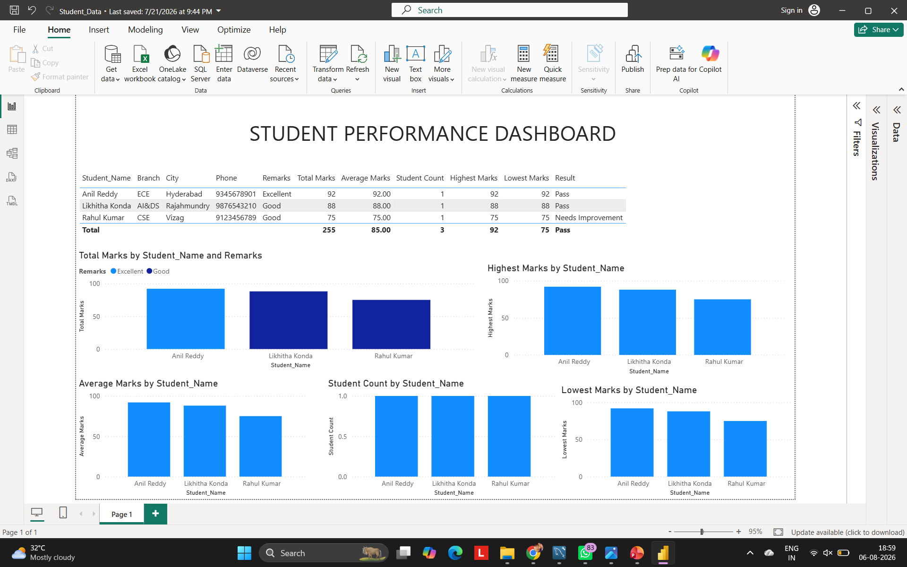

PROJECT 05
Student Performance Dashboard
An interactive Power BI dashboard designed to analyze student academic performance, KPIs and educational indicators.
DASHBOARD PREVIEW

ABOUT THE PROJECT
Academic data into clear insights.
Developed an interactive Power BI dashboard focused on understanding student academic performance.
The dashboard uses KPIs and visualizations to explore student performance and academic indicators.
Data preparation and transformation were performed using Power Query, with DAX used for analytical calculations.
KEY FEATURES
Performance Analysis
Analyze student academic performance using key indicators.
KPI Analysis
Use performance KPIs to understand academic outcomes.
Data Transformation
Clean and transform data using Power Query.
Interactive Visuals
Present academic data through interactive Power BI visuals.
TOOLS & TECHNIQUES
NEXT PROJECT
Employee Management SQL →